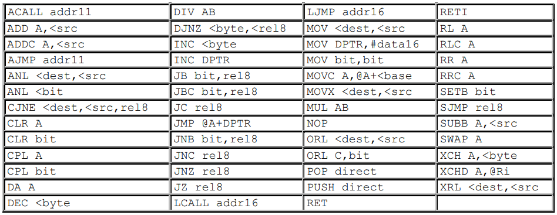
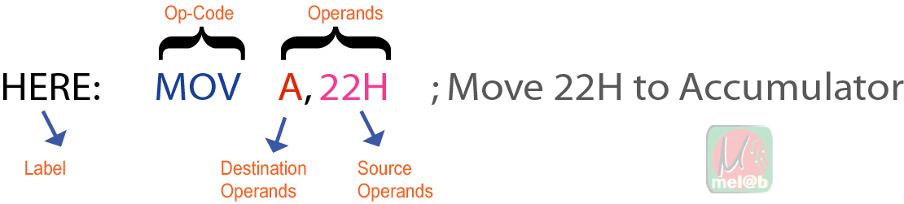
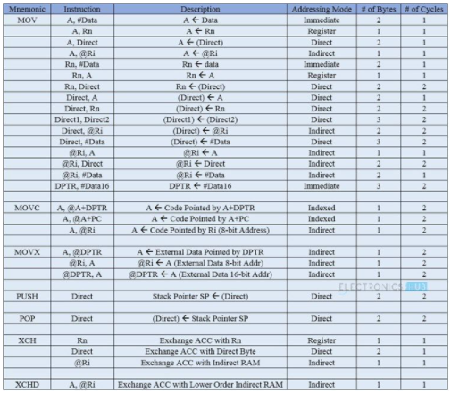
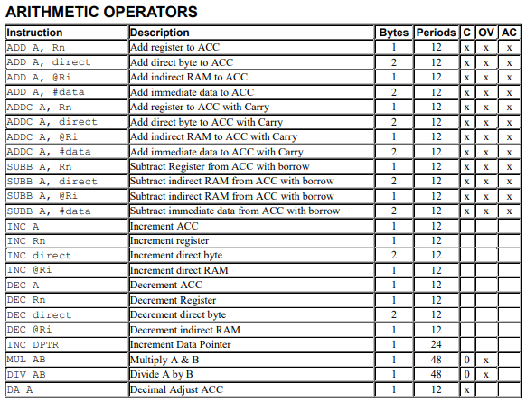

Theories :
Experiments :
8051 Projects: |
Introduction:
Instruction Set of 8051 Microcontroller
Fig: 8051 All Commands
Before seeing the types of instructions, let us see the structure of the 8051 Microcontroller Instruction. Fig: A simple 3 byte Instruction structure
An 8051 Instruction consists of an Opcode (short of Operation – Code) followed by
Operand(s) of size Zero Byte, One Byte or Two Bytes.
8051 series microcontroller has 111 instructions they are:
Based on the operation they perform, all the instructions in the 8051 Microcontroller Instruction Set are divided into five groups. They are:
We will now see about these instructions briefly. Data Transfer InstructionsThe Data Transfer Instructions are associated with transfer of data between registers or external program memory or external data memory. The Mnemonics associated with Data Transfer are given below.
The following table lists out all the possible data transfer instructions along with other details like addressing mode, size occupied and number machine cycles it takes. Fig: 8051 Data Transfer operators
Arithmetic InstructionsUsing Arithmetic Instructions, you can perform addition, subtraction, multiplication and division. The arithmetic instructions also include increment by one, decrements by one and a special instruction called Decimal Adjust Accumulator. The Mnemonics associated with the Arithmetic Instructions are:
All the possible Mnemonics associated with Arithmetic Instructions are mentioned in the following table. Fig: arithmatic_operator
Note : The arithmetic instructions have no knowledge about the data format i.e., signed, unsigned, ASCII, BCD, etc. Also, the operations performed by the arithmetic instructions affect flags like carry, overflow, zero, etc. in the PSW Register. |
Lesson VideoLesson Includes:
Important Downloads
Lesson Contents
|
| Prev topic: Push Button Interfacing with 8051 | Next topic: LED Matrix interfacing with 8051 |